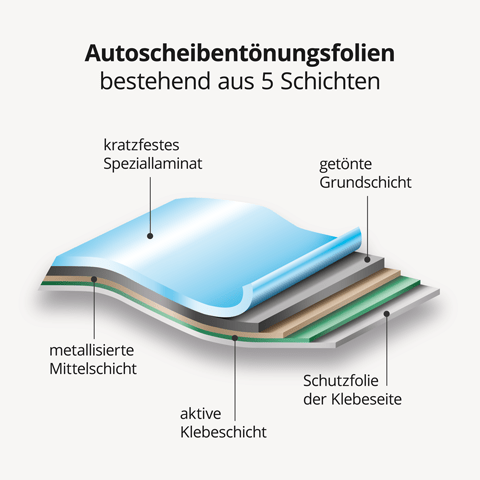
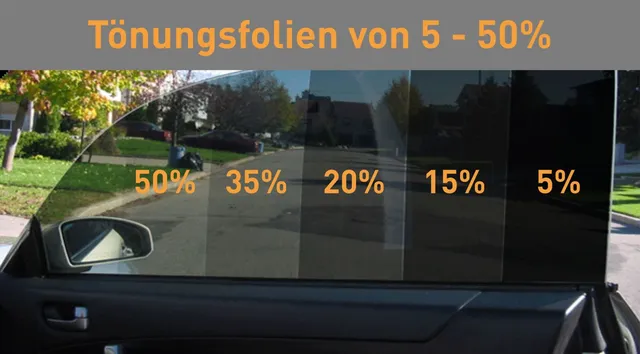
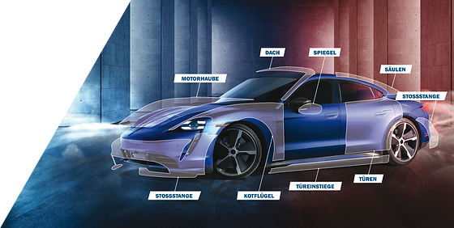
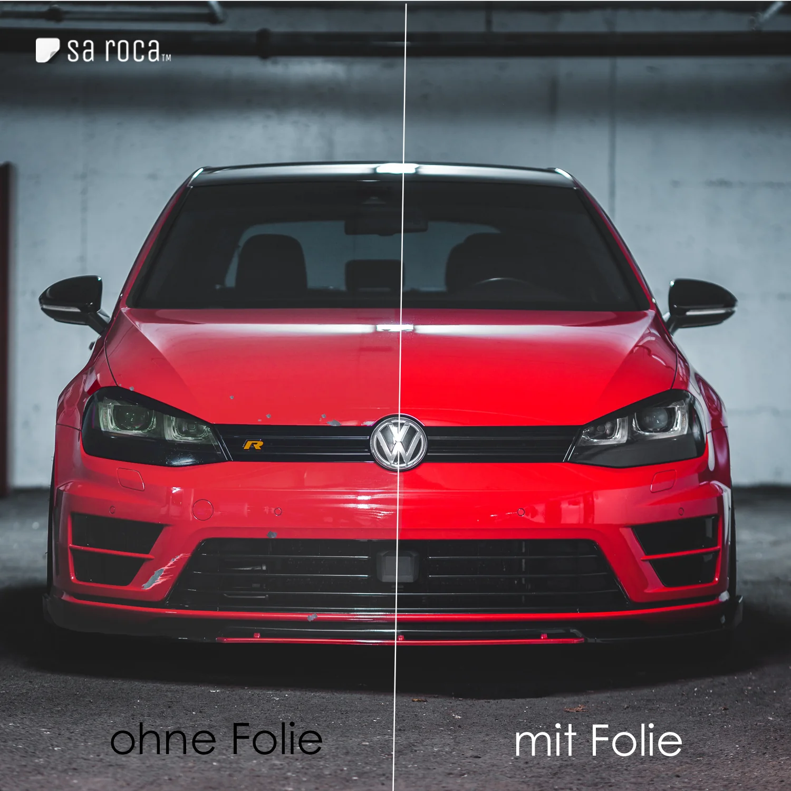
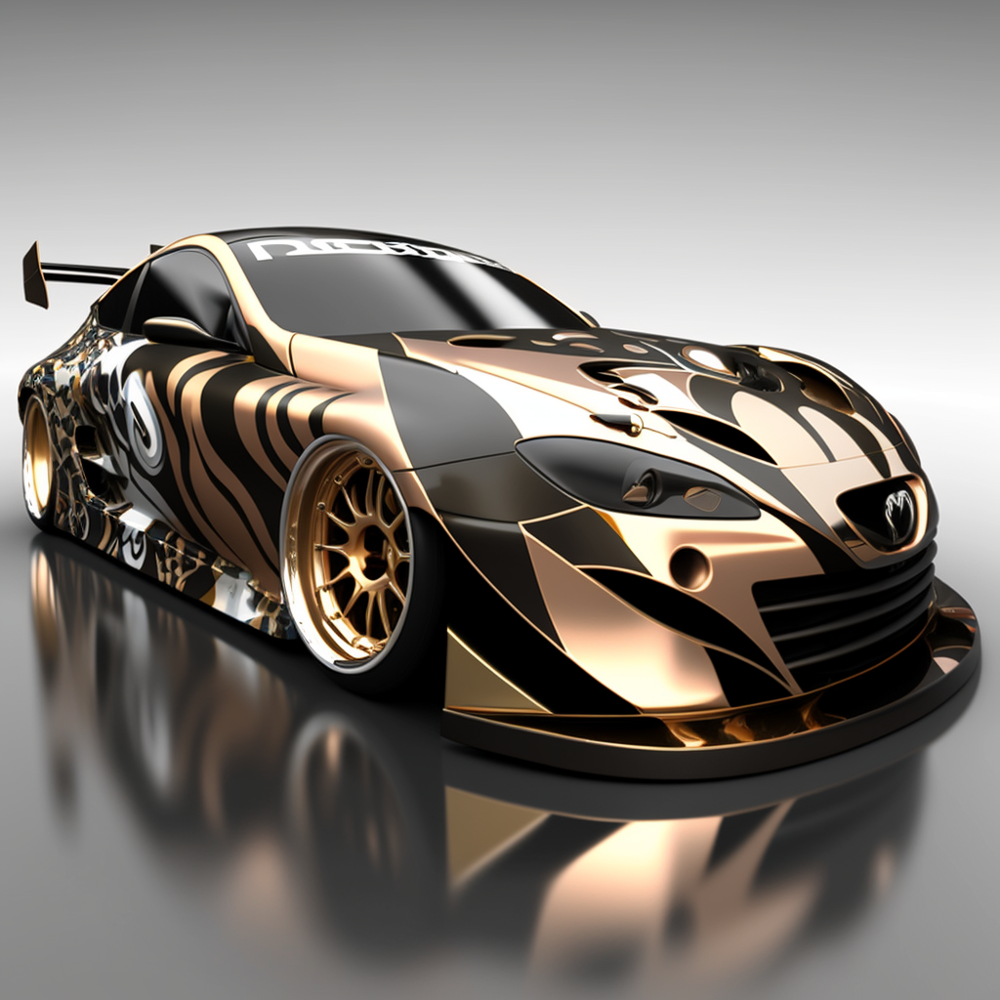
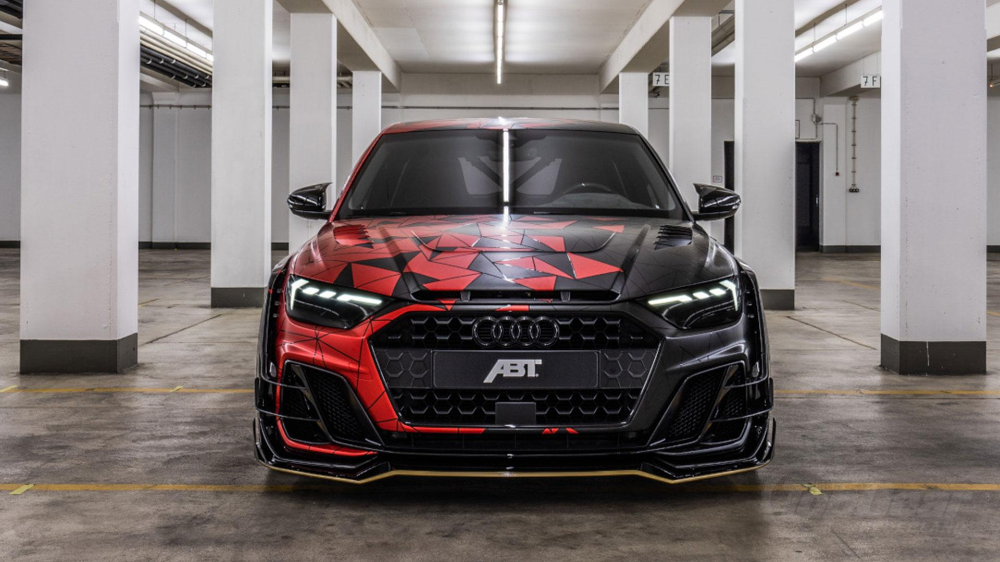

Arten von Autofolien
Autofolien sind eine beliebte Möglichkeit, um das Aussehen und den Schutz deines Fahrzeugs zu verbessern. Sie bestehen aus einer dünnen Schicht aus Vinyl oder anderen Materialien, die auf die Karosserie deines Autos aufgetragen werden. Es gibt verschiedene Arten von Autofolien, darunter Tönungsfolien, Schutzfolien und Designfolien.
Tönungsfolien werden verwendet, um die Sicht in das Fahrzeug zu reduzieren und gleichzeitig vor UV-Strahlen zu schützen. Sie können auch dazu beitragen, die Innenraumtemperatur zu senken und das Eindringen von Sonnenlicht zu verringern.  
Schutzfolien werden verwendet, um den Lack deines Autos vor Kratzern, Steinschlägen und anderen Beschädigungen zu schützen. Sie sind transparent und können unsichtbar aufgetragen werden, um den Original-Lack zu erhalten.  
Designfolien sind eine Möglichkeit, das Aussehen deines Fahrzeugs zu personalisieren. Sie sind in verschiedenen Farben, Mustern und Texturen erhältlich und können auf bestimmte Teile des Autos wie Motorhaube, Dach oder Seitenspiegel aufgetragen werden.  
Bevor du dich für Autofolien entscheidest, ist es wichtig, die örtlichen Gesetze und Vorschriften zu prüfen, da es in einigen Ländern und Bundesstaaten Beschränkungen für die Verwendung von Tönungsfolien gibt.